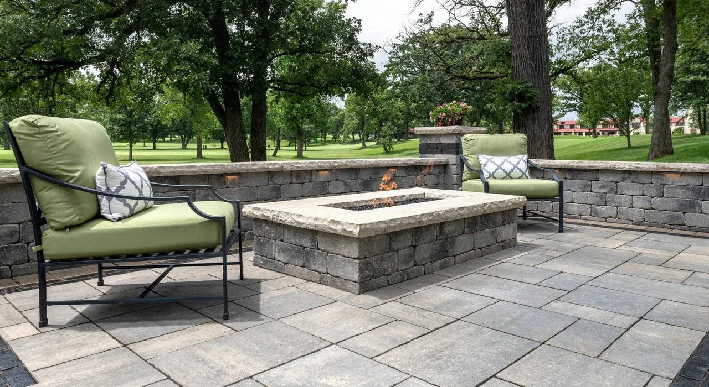

★★★★★
“I don’t usually leave reviews, but Terramorph honestly deserves one. These guys just get it. You can tell right away they actually care about what they’re doing, not just trying to rush through a job.”Altur Earth

Home / Paver Patios and Hardscapes
Premium patios and outdoor living
Paver patios, walkways, hardscape structure, and outdoor living environments designed around entertaining, durability, and property value.
Great work at a fair price. They did what they said they were going to do, when they said they would do it.Richard Hansen
A lot of companies tell you what they are going to do. This company far exceeded their word.jon mercurio
Attention to detail was 2nd to none!Adam Raider
They did an excellent job and completed the same day. I would highly recommend them.Teresa Thompson
10/10 Company, the boys made my house look great. Customer Service is great, best deal on the market.Alejandro Urrea
Great work very accommodating and extremely professional will definitely have them do all my future work.Pete Detgen
Great, professional group of guys!Josh Johnson
They did a fantastic job for me. I will recommend them to colleagues.Dominic Urquiola
Fast and reliable. Ty did excellent work and very reasonable cost. I would not hesitate to suggest him to others.Larry Calcamuggio
Amazing service every time and prompt to all appointments.CJ Miller
Sound familiar?
What you get
 01
01What makes a patio last
Freeze-thaw winters and clay soil are hard on hardscape. The parts you never see - excavation, base depth, compaction, and drainage - are what keep the surface clean and level for years.
 02
02Planning the space
Before pricing, Terramorph maps how people will cook, sit, gather, and move through the backyard - so the finished space gets used instead of admired from the kitchen window.
How we work
Homeowners need to know what happens next: Terramorph reviews the property, talks through the goal, explains practical options, and gives a clear estimate before work begins.
City, goal, frustration, timeline, range, and photos captured quickly.
Grade, water flow, access, soil, sun, materials, and maintenance expectations.
Clear options that connect budget to property improvement and long-term durability.
Professional install, cleanup, walkthrough, and follow-up.
Recent work



Reviews
“I don’t usually leave reviews, but Terramorph honestly deserves one. These guys just get it. You can tell right away they actually care about what they’re doing, not just trying to rush through a job.”Altur Earth
“Great work at a fair price. They did what they said they were going to do, when they said they would do it. Fast, friendly. Will definitely use them again.”Richard Hansen
“A lot of companies tell you what they are going to do. This company far exceeded their word.”jon mercurio
Questions homeowners ask
Still wondering about something? Call 419-873-6801, 7 a.m. to 8 p.m.
Yes. Terramorph handles paver patios, walkways, seating areas, steps, fire pits, outdoor kitchens, retaining details, and hardscape upgrades.
Yes. Drainage, grading, base conditions, and water movement should be considered before patio or walkway work begins.
Yes. Terramorph offers free estimates for landscape design, patios, drainage, lighting, lawn maintenance, seasonal cleanups, and related outdoor property work.
Terramorph serves Wood and Lucas County, with especially strong coverage in Perrysburg, Sylvania, Maumee, Monclova, Holland, Waterville, Whitehouse, and Ottawa Hills.
Terramorph at a glance
Terramorph LLC is a landscape design and build company based in Perrysburg, Ohio, founded by brothers Ty and Trent Lincoln. We handle paver patios and hardscapes along with patios, drainage, landscape beds, lighting, lawn care, cleanups, and snow removal for homes and businesses across Wood and Lucas County. 4.9 stars from more than 220 Google reviews, BBB accredited, and estimates are free.
Keep reading
Near you
Free estimate
Free estimate
Send project details through the quote form, or call directly for urgent service questions and scheduling.
Call now or jump straight to the quote request form.